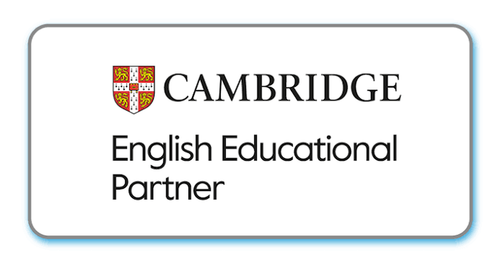

February Learning Snapshot
Um retrato cuidadoso dos vínculos, da participação, da curiosidade e das primeiras experiências de aprendizagem em inglês.
Uma mensagem para a família
Que bom iniciar esta jornada com o aluno! Em February, a turma viveu propostas de acolhimento, investigação e comunicação em inglês, construindo segurança para participar e aprender.
Neste mês, vivenciamos
Um recorte das experiências que deram contexto às descobertas do mês.
February · Welcome, inquiry and belonging
A turma entrou no universo do Year 1 por meio de rotinas de sala, perguntas, observação de seres vivos e não vivos, contagem, formas e comunicação apoiada. Global Perspectives apareceu nas atitudes de investigar, ouvir diferentes ideias, cuidar dos materiais e construir combinados em grupo.
Como está sendo a adaptação de o aluno na escola
O Snapshot olha para o percurso vivido; a avaliação por disciplinas e objetivos consolidados fica registrada no Report Card.
Chegada e participação
O aluno participou com interesse e iniciativa das rotinas, dos combinados e das primeiras propostas coletivas.
Curiosidade e investigação
O aluno mostrou curiosidade para observar, perguntar e testar ideias em experiências de sala.
Comunicação e convivência
O aluno usou palavras, gestos e apoios visuais para comunicar ideias e participar com os pares.
Caminhos que vamos seguir
Seguiremos oferecendo rotinas claras, apoio visual e desafios de investigação para ampliar a autonomia, a escuta e a confiança para explicar escolhas.
Celebramos cada passo deste começo. Escola e família seguem em parceria para que o aluno se sinta pertencente, curioso e cada vez mais seguro para aprender.